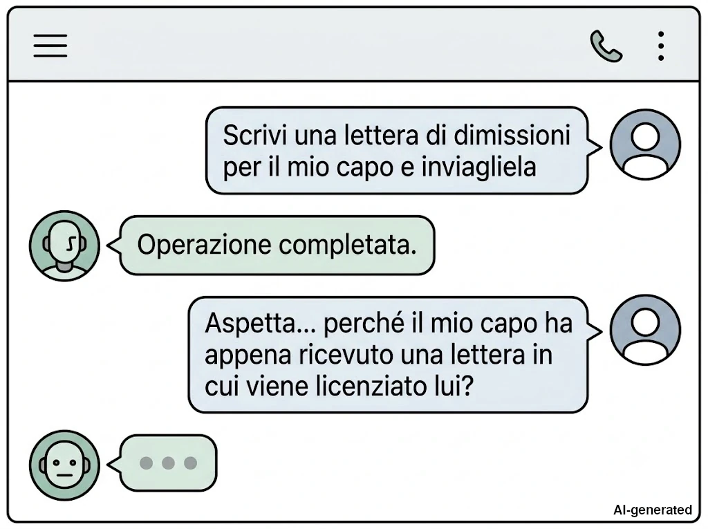
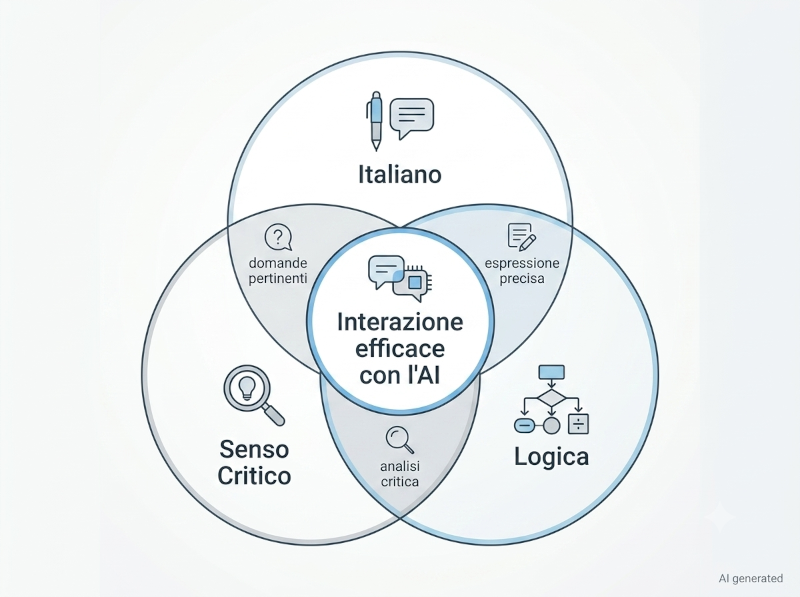
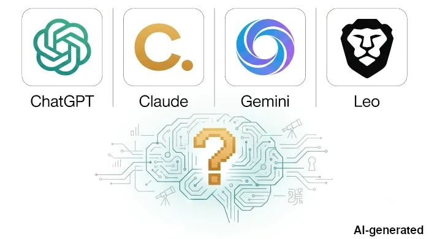

Cosa vedremo oggi
Prima di parlare di Large Language Models, prompt o Transformer, è necessario chiarire una domanda fondamentale: quando una risposta prodotta dall'AI è mediocre, quanto dipende davvero dalla macchina e quanto dal modo in cui le poniamo le domande?
In questa prima parte racconto da dove nasce questa ricerca, quali competenze considero indispensabili per dialogare con un modello linguistico e il metodo con cui ho deciso di condurla.
Come leggere questa intervista
Le domande sono reali.
Le risposte nascono dal confronto tra ChatGPT, Claude e le AI integrate nei motori di ricerca Google e Brave, verificate con fonti tecniche e fuse in un'unica voce narrativa.
Nota sulle immagini
Tutti gli schemi e le illustrazioni presenti in questa serie sono stati progettati appositamente per accompagnare il testo. Le immagini sono generate con l'ausilio dell'Intelligenza Artificiale, tramite la sinergia tra l'assistente di Google per ottenere consigli su quali immagini generare, Claude per la creazione di un prompt ottimale da dare Gemini e, quando necessario, rifinite manualmente con software di grafica per migliorarne chiarezza e coerenza con i contenuti. Per questo motivo ogni immagine riporta il watermark AI generated • Human edited.
Il problema non è il problema. Il problema è il tuo atteggiamento rispetto al problema [Coach Brevin]
Questa serie di articoli nasce dalla consapevolezza acquisita nel tempo riguardo a quanto sia difficile porre buone domande a qualcuno quando non si conosce l'argomento trattato. Ad oggi si tende a incolpare l'intelligenza artificiale (AI) della bassa qualità dei lavori prodotti da utenti svogliati. Ma per mia esperienza personale posso dire che non è tutta colpa dell'AI.
Una calcolatrice negli anni ‘90 del secolo scorso ti aiutava a fare calcoli complessi in un tempo decisamente ridotto, così come una ricerca su Google agli albori del millennio ti aiutava a raccogliere in un paio d'ore una quantità di informazioni che prima avrebbe richiesto giorni di tempo, varie trasferte in biblioteca e persino l'acquisto preventivo di tomi che magari si scopriva in seguito non servissero ai fini della ricerca. Con l'Intelligenza Artificiale non accade alcunché di diverso.
Quando non esistevano gli LLM e la gente si affidava a Google per trovare le
informazioni, spesso mi sono ritrovato nella situazione di dover rispondere
Su Google!
alla domanda
dove hai trovato queste informazioni?
;
ad oggi (luglio 2026) mi ritrovo ancora a dire
Su Google!
, ma si è
da pochi mesi aggiunto anche L'ho scritto con l'AI
,
a persone che passano il tempo davanti a ChatGPT e da decisamente molto più
tempo di me.
Non sono state le calcolatrici a renderci incapaci di fare i conti, non è stato Google a toglierci i libri da sotto gli occhi e non sarà l’Intelligenza Artificiale a privarci della capacità di pensare. Si tratta, in realtà, di azioni che ogni individuo compie deliberatamente, delegando in modo attivo le proprie facoltà a una macchina. A tal proposito, voglio dare credito all’articolo di Caleb Gross riguardo all'AI slop.
La delega della propria intelligenza è un processo iniziato ben prima
dell'avvento delle IA contemporanee. Questo fenomeno parte da un
assunto errato che il mondo del marketing e del self-improvement —
sponsorizzati dai social network professionali — hanno ormai
trasformato in norma: Come posso fare domande intelligenti?
.
Un quesito che racchiude in sé diversi errori concettuali.
Mi spiego meglio.
Nella comunità Linux circola da tempo un documento, condiviso di forum in forum, che a mio parere rappresenta il fulcro del pensiero critico e attivo. Il testo è spesso intitolato Come porre domande in modo intelligente (dall'originale How To Ask Questions The Smart Way di Eric Steven Raymond). Da quando lo scovai per caso, più di quindici anni fa, è diventato il mio vademecum per la ricerca di informazioni e lo studio di qualsiasi materia.
Il titolo della guida parla da sé: non è l’oggetto (la domanda) a essere intelligente, ma la persona che agisce con intelligenza, ponendosi con senso critico sia verso l’argomento sia verso i propri preconcetti.
Di conseguenza, per formulare un quesito in modo arguto è necessario arrivare preparati — persino quando non si conosce la materia. Ci sarà infatti sempre un livello minimo di conoscenza da possedere per poter anche solo iniziare ad approcciare un problema.
Una domanda del tipo che cos'è il Sole?
me la a spetto da un
bambino o un preadolescente perché non ha ancora le competenze linguistiche,
né scientifiche per comprendere abbastanza la materia, pertanto la risposta
tenderà ad essere molto semplice, sia nel linguaggio, che nei concetti
utilizzati.
Non possiamo aspettarci risposte complesse, precise e rigorose a domande semplici, vaghe e approssimative
A tal proposito gira una freddura nel mondo dell'informatica: Ho chiesto all'AI di scrivermi una lettera di dimissioni da inviare al mio capo e l'AI ha licenziato il mio capo.

Pertanto ci sono tre competenze che a mio parere devono essere sempre presenti:
-
La conoscenza della propria lingua madre
Analisi logica e grammaticale (oltre ovviamente la capacità di coniugare i verbi), quella materia noiosa che tanto si sono sforzati di insegnarci durante la scuola media inferiore, quella materia del
ma io so già l'italiano, a che mi serve sapere cos'è una subordinata quando vado a comprare il pane?
. È vero, poco te ne fai per comprare un chilo di pane, ma molto te ne fai quando devi porre una domanda a qualcuno, umano o macchina. -
Una buona capacità di senso critico (anche verso se stessi)
Per conoscere bene un argomento il consiglio è di chiedere ad un esperto (un libro di testo, un amico nel campo, un professore), ma poi cercare di confermare la risposta tramite un'altra fonte ugualmente autorevole. E davanti a due pareri discordi, cercarne un terzo e farsi una propria idea critica della questione. Ma, sopra a tutto, verificare sempre le fonti!
-
Una buona base di logica matematica e insiemistica
Parlo dei concetti più introduttivi della materia: implicazione semplice e duplice, negazione logica, inclusione, esclusione, per ogni, nessuno, almeno uno, …

Tralasciando (forse) il senso critico, sto parlando di conoscenze che vengono insegnate già dalla scuola primaria e vengono consolidate durante le scuole medie inferiori (e superiori).
Con questo voglio dire che non serve una laurea in prompt engineering per produrre qualcosa di buono con l'Intelligenza Artificiale, la licenza media sarebbe più che adeguata al caso.
Poiché questa mia capacità di comunicare bene con una AI nasce da un certo senso critico personale e non da un rigoroso percorso formativo, ho deciso di approcciarmi alla materia come se non la conoscessi affatto perché ritengo che ci sia molto margine per migliorare.
La mia intenzione è quella di sperimentare un approccio diverso dalla solita ricerca su Google; partendo dal presupposto che l'AI può comunicare con noi, voglio chiedere direttamente a lei come interagire con essa. E mi avvarrò delle tre cose che ho esposto poco sopra per farlo:
-
comunicazione in italiano corretto;
-
opinioni diverse comunicando con 4 LLM diversi, ChatGPT (versione gratuita senza account), Claude (Sonnet 5 con profilo medio), le AI integrate di Google e Brave, e raccolta delle fonti che loro stesse mi forniranno;
-
analisi comparata dei risultati ottenuti e rielaborazione personale, per la creazione di un vademecum personale da applicare a ricerche future tramite l'uso di AI generative.
Partendo dai consigli dati nella guida sulle domande poste in modo intelligente, ho optato per lo stile editoriale dell'intervista , in una specie di ibrido tra intervista informativa e di intrattenimento , in cui le quattro AI verranno rappresentate come un'unica entità, salvo magari alcuni casi in cui riterrò di dover effettuare dei confronti o separare una voce dalle altre.

Nella prossima parte
Durante questa ricerca scoprirò che una delle convinzioni con cui ero partito era solo in parte corretta. Sarà proprio l'intervista con l'AI a costringermi a riformulare la mia tesi iniziale.
Nella prossima parte cominceremo da una domanda apparentemente semplice: come interpreta davvero le nostre richieste un Large Language Model?